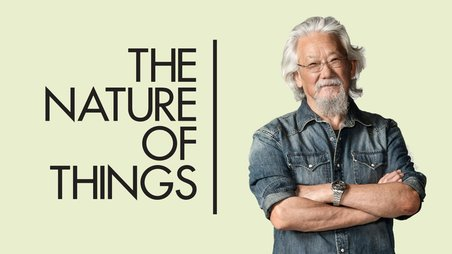

David Suzuki accomplished many great things in his life, but there are some things that stand out from the others. David started his first broadcasting job in 1970, working on a show called "Suzuki on Science". After 4 years, Suzuki decided to create a radio program which he creatively named "Quirks & Quarks". Quirks & Quarks was hosted on CBC AM radio and was very popular throughout 1975 to 1979. In addition to his broadcasting career, David also was the host of a Science Magazine, centered towards an adult audience.
 In 1979, David Suzuki was given the ability to merge his ongoing science magazine with a television series, "The Nature of Things". In addition, doing so would result in David having to discontinue his radio series, "Quirks & Quarks". Despite this, David decided to go along with this idea. He believed a television series such as The Nature of Things would give him a wider audience, and would allow him to convey his messages about science and nature in a more direct fashion. After David had joined The Nature of Things, the show was renamed to "The Nature of Things: With David Suzuki". Currently, the Nature of Things is one of the most well known nature show of all time, being broadcasted in over 50 countries worldwide.
Aside from The Nature of Things, David also produced many other successfull television series. In 1993, he worked on a PBS show named "The Secret of Life". In 1985, David produced his hit show "A Planet for the Taking", which recieved incredible feedbacked and was viewed around 1.8 million times per episode. Suzuki's goal while creating his TV series was to promote science through a fun and entertaining format, something all of the general public could understand. Luckily, his idea worked, as his shows have won numerous awards and are loved by citizens across Canada and the rest of the world.